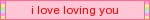
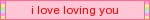

Dear Ghost...
Thank you for being the best thing that's ever happened to me, and always being there to cheer me on and always remind me that I'm worth it. I've never been so happy to call someone my soulmate, my other half, my moon and stars, and I want to be there for you like you've always been there for me. From the time we first met, I always knew there was something so special about you, something that told me that you were always the one for me, and I truly believe that fate has brought us together in a way that I've never experienced before until you came along.
There's so much I could say about how special you are! You're always so caring when I'm in a rough spot, so understanding when I struggle with my health, and so patient when I need to take more time to do things than other people. You also always know how to make me laugh, you always know how to make me feel loved, and you always make me feel like I'm home whenever I'm talking with you.
You've changed my entire life permanently, and for the better. Because of you, I've learned how to grow kinder, become more accepting and open-minded, and find confidence in myself for things that I never would've imagined I'd ever feel good about. You've left a mark on my life, and it's still the best thing that's ever happened to me.
You're the best partner I could've ever asked for, and I can't wait for us to have a life together, and I hope to be there for you as much as you've been there for me.
Sincerely,
~Eddie
We've been together for...

 



What I love about Ghost...
- Their caring and loving nature
- Their unwavering, unconditional love and support
- Their ability to make me laugh
- Their warmth that makes me feel like I'm home
- Their contagious laugh
- Their willingness to understand and accept people with open arms
- Their creativity in their writing and original characters
- Their taste in art, music and aesthetics
- Their beautiful eyes
Things Ghost loves...
- Dr. Pepper!!! It's their favourite drink.
- Clowns, especially little clown knick-knacks like porcelain figures and dolls
- Collecting physical media!! we love getting each other our favourite pieces of media for each other as gifts.
- Watching movies, especially horror movies or those with their favourite actors in them!! Even if they end up being bad, they still show a huge appreciation for movies as an art medium.
- The colours green and purple. 💚💜
- Cute vintage plushies and toys.
How we met
Would you believe me if I said that everything came to be thanks to an Armenian-American metal band? No really, that's how we met!
Specifically, we met because I drew a piece of fanart of Serj Tankian- frontman of said metal band called System of a Down- which Ghost also happened to be into at the time, and posted it to my (now abandoned) DeviantArt account. Thankfully one of their friends was watching me at the time (and I think I was even mutuals with them this whole time? Not knowing that he was also friends with Ghost!) and sent the fanart their way, and they loved it!
From there they followed me on my more personal social media platforms (Twitter and Tumblr specifically) and I followed them back, seeing as they also liked SOAD as much as I did at the time. Eventually this would lead to us sharing Discord tags, and we began talking almost every day since then! Around this time, I also made a separate SOAD-centric Twitter account (which has sadly since been suspended,) that Ghost would eventually follow, and we would continue our discussions about the band there.
Over time with talking to each other, however, we found that we had a lot of other shared interests- toys and toy collecting, vintage and antique things, horror media, and music (in general) are just a few of the interests we share amongst each other. We would start talking every day, and months into us talking I started developing feelings for them. I was much too shy about acting upon these feelings though, so I kept them to myself, not thinking that they would ever return the feelings.
That was, until very early into October 24th, 2019, when we finally confessed our feelings for each other!
From there, our relationship has been flourishing, and we've been growing as people together ever since. Even after all these years, it still feels like a dream come true that they like me back and that we've been together for this long. Ghost makes me feel like the luckiest man alive, I wouldn't want to have it any other way!
And yes, for the record, we're still very much into SOAD. We might not be super fixated on it anymore like we used to be, but it's still such an important part of our story that I don't think either of us will ever let go of the sentimental value we hold towards their music. Our fursonas have matching SOAD-inspired markings for a reason! We've even made it a goal of ours to see them live together some day- I hope that can happen!!

Testimonials